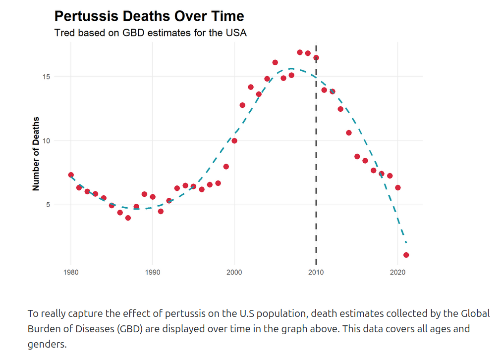
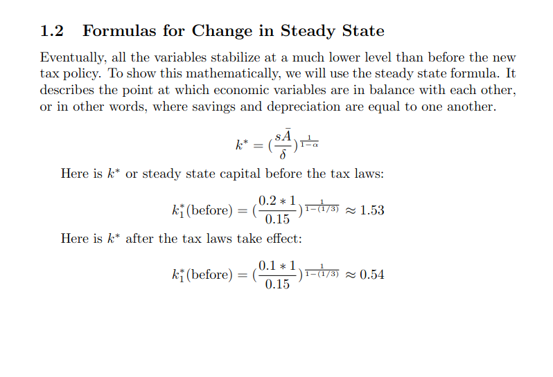
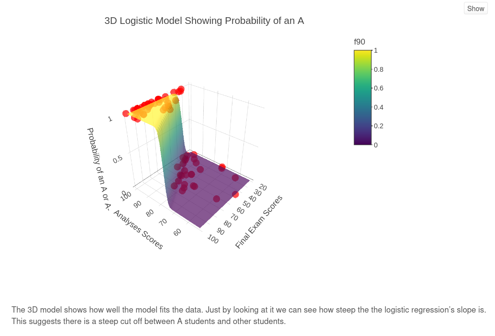
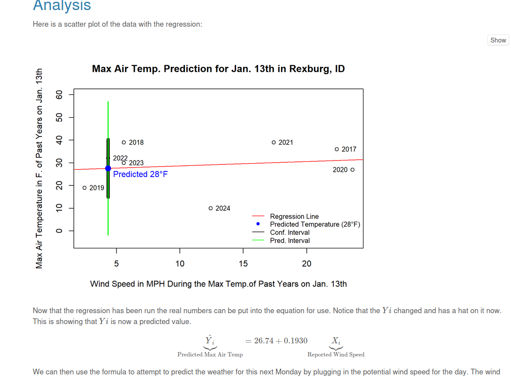
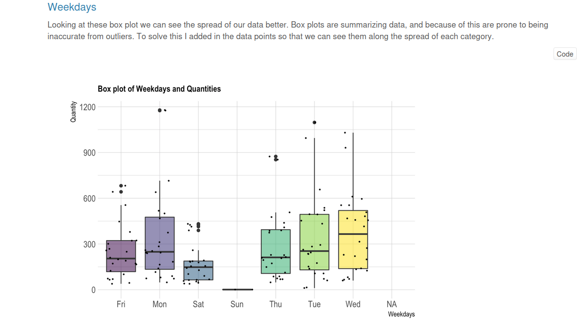
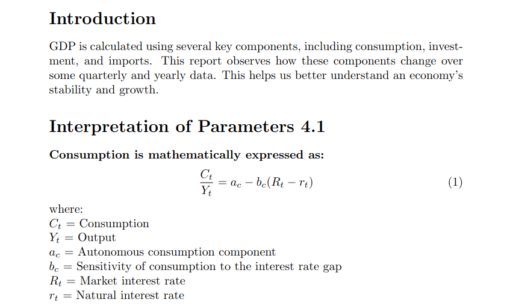
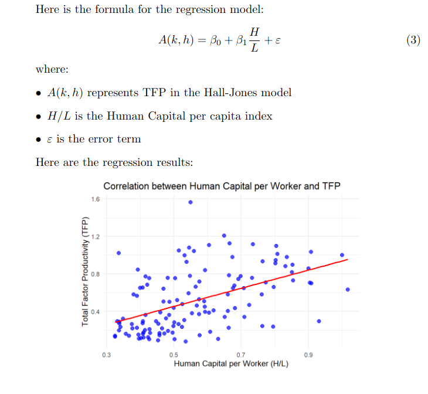
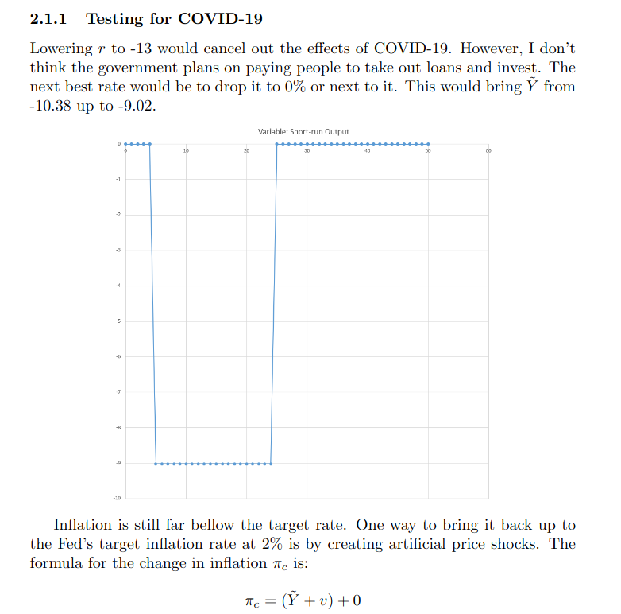
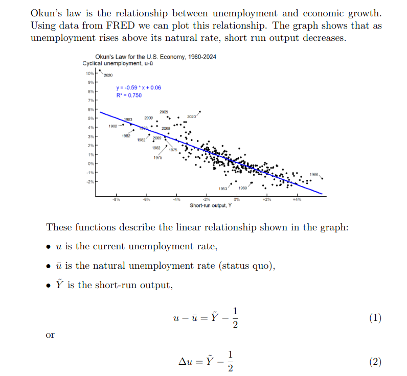
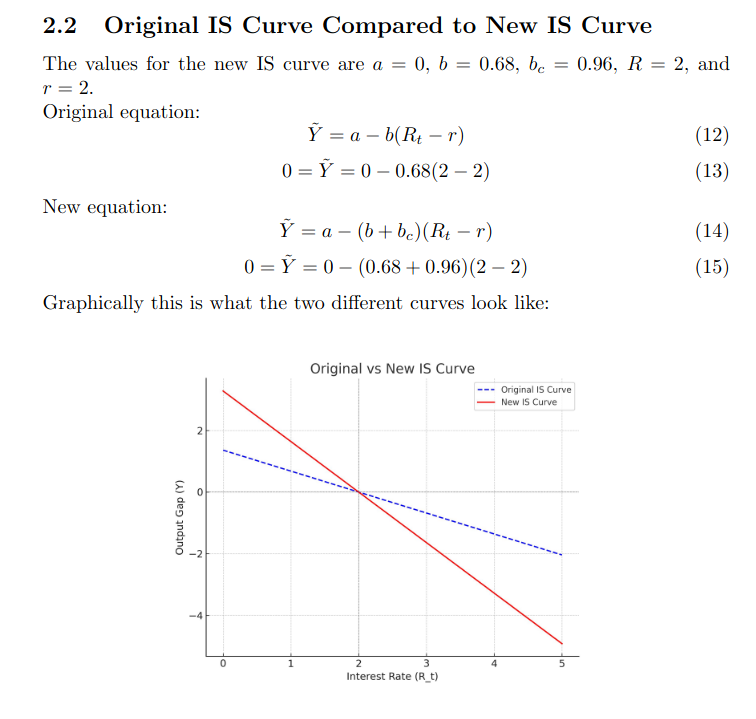

Here are some of the projects that have helped me learn the most.

Quarto analysis exploring epidemiological trends in whooping cough incidence.

Analysis using the Solow Growth Model to study long-run economic growth drivers.

Uses statistical modeling to predict student grades based on survey and performance data.

A simple machine learning approach to short-term weather prediction.

Data analysis of campus gym usage patterns to identify peak times and trends.

Econometric estimation of the IS curve, analyzing investment-savings relationships.

Breakdown of economic growth into factor contributions like capital, labor, and technology.

Simulated effects of monetary policy and IS shifts on output and interest rates.
Summary of national income accounting principles and key macroeconomic measures.

Empirical analysis of the relationship between unemployment and GDP growth.

A conceptual study of macroeconomic policy tools and their theoretical implications.
A PowerPoint presentation analyzing onion sales trends with Category Partners data.